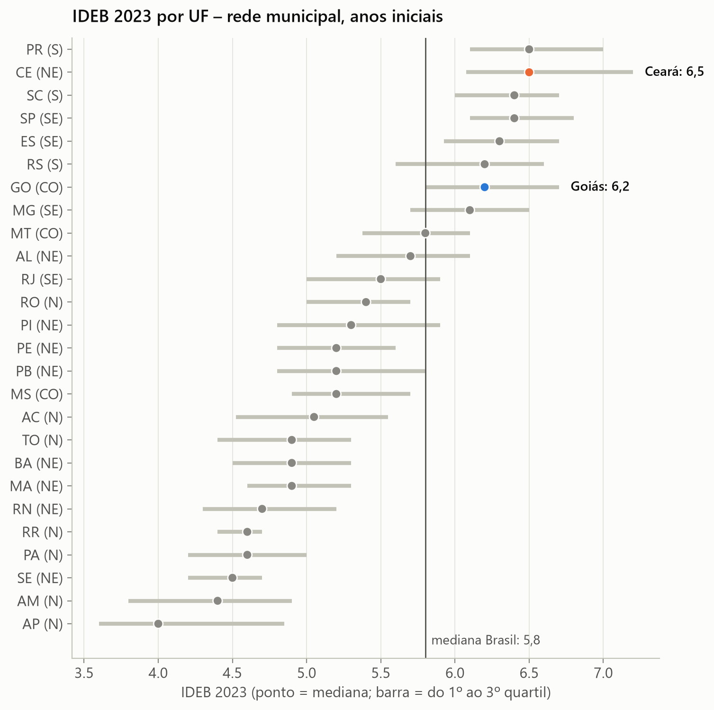
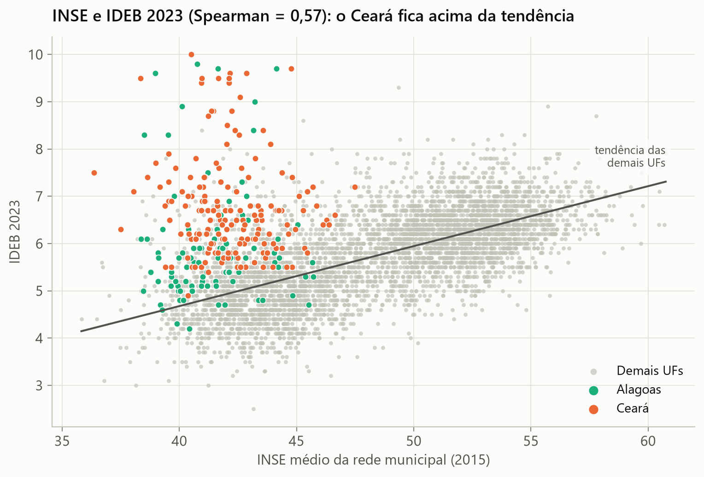
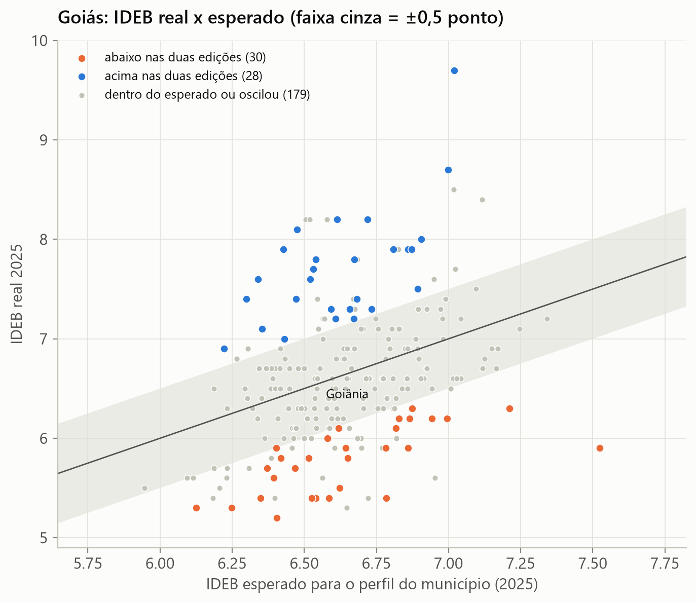
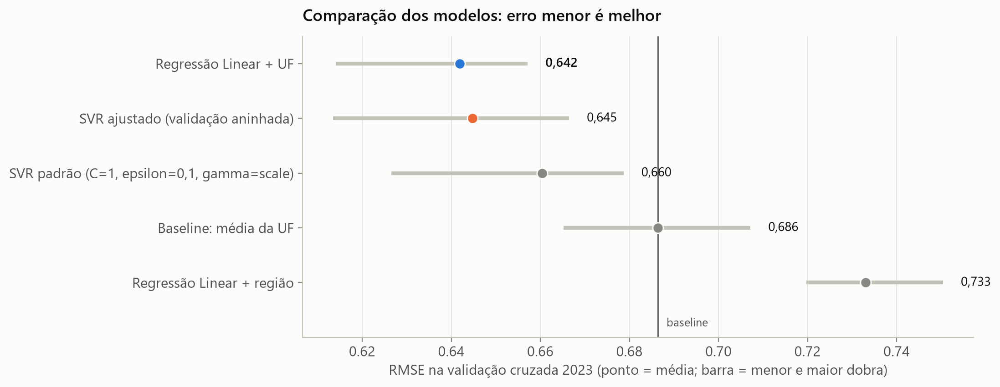
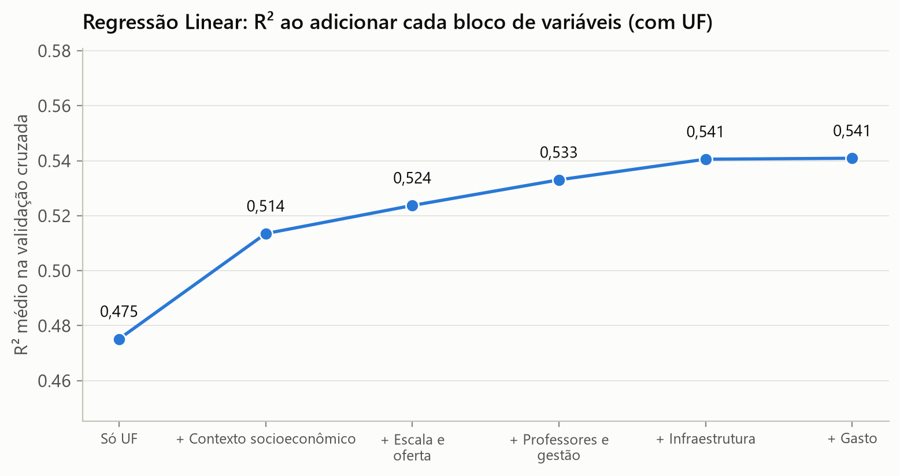
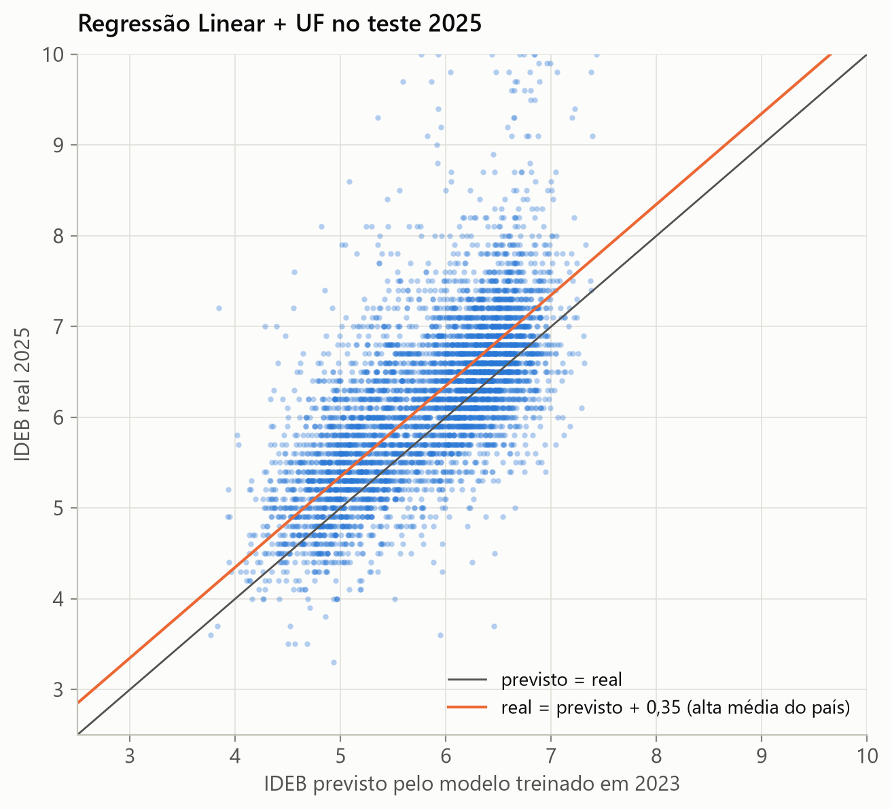
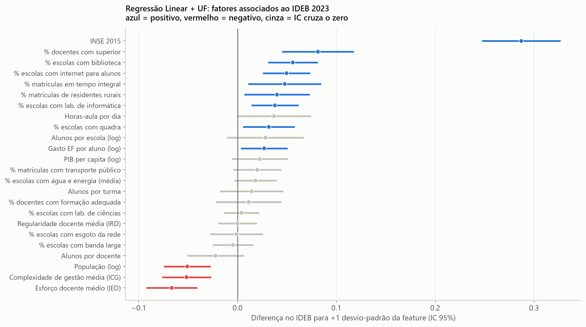
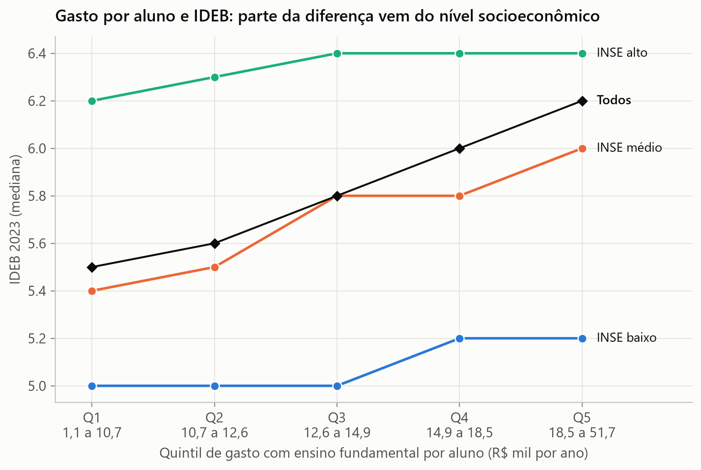

O problema de negócio
Qual IDEB seria esperado para cada município, dado o seu perfil? Quais fatores acompanham as diferenças?
-
5.241
municípios com IDEB da rede municipal em 2023 (5.320 em 2025)
-
6
fontes oficiais cruzadas pelo código do município (INEP, Tesouro Nacional e IBGE)
-
R$ 0
de custo na extração (BigQuery Sandbox)
Da pergunta ao recorte
Quem financia cada etapa?
O ensino médio é estadual, e os anos finais são divididos entre estado e prefeitura.
Anos iniciais, rede municipal
É a etapa que a prefeitura financia quase sozinha, então o gasto municipal conversa com o resultado.
Município e ano
Treino com o IDEB 2023. Teste fora do tempo com o IDEB 2025, usado uma única vez.
Regressão supervisionada
O alvo, o IDEB (0 a 10), é contínuo.
Variáveis consideradas e quem as controla
| Grupo | Exemplos na base | Gestor controla? |
|---|---|---|
| Contexto socioeconômico | INSE 2015, PIB per capita, % de matrículas rurais | Não: controle |
| Professores e gestão | % de docentes com superior, formação adequada, esforço docente | Em parte |
| Infraestrutura | Biblioteca, quadra, internet para alunos, laboratório | Sim |
| Gasto | Despesa liquidada com ensino fundamental por aluno (Siconfi) | Sim |
| Fatores externos | Política estadual, participação no SAEB, pandemia | Não: limitação |
* Nada que entra no cálculo do IDEB (aprovação, nota do SAEB, reprovação, abandono) foi usado.

A UF pesa: a média vai de 4,77 no Norte a 6,35 no Sul. Goiás tem a 6ª maior mediana (6,2) entre 26 UFs.

O nível socioeconômico explica muito (Spearman 0,57), mas o Ceará fica em média 1,82 ponto acima da tendência: um fator externo, a política estadual de alfabetização.
Desafios de dados, antes de modelar
Fonte corrompida
Indicadores de 2023 e 2024 com colunas trocadas
- por turma: Goiânia em 2023, na fonte (o real é 24,5)
- Ajuste: indicadores de 2022 nas duas safras
Vazamento
IDEB = nota do SAEB × taxa de aprovação
- do cálculo do IDEB entram no modelo
- Pipeline ajustado só no treino de cada dobra
Gasto declarado errado
O Siconfi é autodeclarado
- por aluno num município de MG
- 15 valores implausíveis viraram ausentes

Comparar cada município com o IDEB esperado para o seu perfil
Em vez da média nacional, a régua é o resultado de municípios parecidos no mesmo estado.
- Comparação justa: um município pobre com IDEB 5,5 pode estar acima do esperado
- Priorização: quem fica abaixo do esperado em duas edições seguidas
- Aprendizado: quem supera o esperado vira referência para os demais
Associação não é causalidade: o modelo prioriza, não decide sozinho.
Seleção do método
| Modelo | Por quê | Papel |
|---|---|---|
| Regressão Linear | Coeficientes mostram quanto cada fator acompanha o IDEB, mantidos os demais | Principal |
| SVR (SVM, kernel RBF) | Capta não linearidades e interações, mas não tem coeficientes | Desafiante |
| Regressão Logística | Exige virar "atingiu 6,0?" e perde a informação de quanto falta | Complementar |
| GMM, DBSCAN, Mean Shift | Não supervisionados: formam grupos, mas não estimam o IDEB | Descartados |
| Média do IDEB da UF | O que se consegue sem modelo; todo modelo precisa superá-la | Baseline |
* Lista restrita pela disciplina: Mean Shift, GMM, DBSCAN, Regressão Linear, Regressão Logística e SVM.
pipeline = Pipeline([
('prep', ColumnTransformer([
('num', Pipeline([('winsor', Winsorizador(0.01, 0.99)),
('imputacao', SimpleImputer(strategy='median')),
('escala', StandardScaler())]), NUMERICAS),
('cat', OneHotEncoder(drop='first'), ['sigla_uf'])])),
('modelo', LinearRegression())])
cv = KFold(n_splits=5, shuffle=True, random_state=42)
cross_validate(pipeline, X, y, cv=cv, scoring=['neg_root_mean_squared_error', 'r2'])
Desafio: a Regressão Linear com região errou mais que o baseline (0,733 contra 0,686). Com a UF no lugar da região, o erro caiu para 0,642, 6,5% abaixo do baseline.

Depois da UF, o contexto socioeconômico é o bloco que mais acrescenta. O gasto por aluno, entrando por último, não acrescenta nada.
Teste fora do tempo: IDEB 2025
Avaliação única. O IDEB real ficou 0,35 ponto acima do previsto (o país melhorou entre as edições). Descontado esse deslocamento, a variação explicada foi:
R² sem o viés. Ordem dos municípios (Spearman): 0,64 no baseline, 0,70 na Regressão Linear e 0,74 no SVR.

Descontada a alta média de 0,35 ponto, o erro da Regressão Linear (0,658) fica perto do da validação cruzada (0,642). O SVR errou 4,6% menos no teste, mas a escolha feita antes do teste foi mantida.

Dentro da mesma UF: INSE (+0,31 ponto a cada 5 pontos), docentes com superior (+0,05 a cada 10 p.p.), biblioteca, internet, laboratório, quadra e tempo integral acompanham IDEB maior. Esforço docente e gestão complexa, IDEB menor.
Quanto vale dobrar o gasto por aluno?
ponto de IDEB, sem nenhum controle
controlando INSE e PIB per capita
comparando municípios da mesma UF
no modelo completo (IC 95%: 0,01 a 0,11)
A associação encolhe à medida que o contexto entra: é confusão, e por isso associação não é causalidade.

Quem gasta mais tem alunos de nível socioeconômico mais alto: no quintil de maior gasto, 45% dos municípios têm INSE alto e 14% INSE baixo.
Entre municípios parecidos, gastar mais por aluno, sozinho, acompanha uma diferença pequena no IDEB. O que provavelmente pesa é como o recurso é usado.
Leitura dos resultados Efeito parcial do gasto entre o percentil 5 e o 95: +0,09 a +0,12 ponto
Priorização: abaixo do esperado em duas edições
-
534
municípios abaixo do esperado em 2023 e em 2025 (10,3%), e 565 acima
-
300
em que a Regressão Linear e o SVR concordam: a lista principal
-
0,66
de correlação do desvio entre as edições: não é ruído, é algo persistente do município
Goiás: estudo de caso
Abaixo do esperado
nas duas edições, de 237 municípios
- 19 com concordância dos dois modelos
- Não gastam menos: R$ 22,8 mil por aluno
Entorno de Brasília
microrregião com mais casos
- Novo Gama, Planaltina, Cidade Ocidental, Santo Antônio do Descoberto…
- Sugere ação regional com o estado
Acima do esperado
nas duas edições
- Rio Verde e Goianésia: mais de 1 ponto acima
- Referências para estudar; Goiânia fica no esperado
Goiás: primeiros municípios a diagnosticar
| Município | Microrregião | IDEB 2025 | Esperado | Desvio 2023 / 2025 |
|---|---|---|---|---|
| Goiandira | Catalão | 5,9 | 7,52 | −1,69 / −1,62 |
| Caturaí | Anápolis | 5,4 | 6,78 | −0,83 / −1,38 |
| Santo Antônio do Descoberto | Entorno de Brasília | 5,2 | 6,41 | −1,34 / −1,21 |
| Guarani de Goiás | Vão do Paranã | 5,4 | 6,59 | −1,38 / −1,19 |
| Divinópolis de Goiás | Vão do Paranã | 5,4 | 6,54 | −1,03 / −1,14 |
| Monte Alegre de Goiás | Chapada dos Veadeiros | 5,4 | 6,53 | −1,41 / −1,13 |
| Hidrolândia | Goiânia | 5,4 | 6,35 | −0,83 / −0,95 |
| Novo Gama | Entorno de Brasília | 5,3 | 6,25 | −0,58 / −0,95 |
* Os 8 maiores desvios entre os 19 municípios com concordância dos dois modelos. Lista completa no notebook 04.
Recomendações para a gestão
-
1
Usar o IDEB esperado como régua (faixa de ±0,5 ponto), e não a média nacional.
-
2
Diagnosticar em campo primeiro os 300 municípios com consenso (19 em Goiás).
-
3
Aprender com os 565 que superam o esperado (Rio Verde, Goianésia, o caso do Ceará).
-
4
Olhar a qualidade do gasto antes da quantidade.
-
5
Testar alavancas (formação docente, biblioteca, tempo integral) em pilotos avaliados.
-
6
Fazer uma ação regional no Entorno de Brasília e recalibrar o modelo a cada edição.
Riscos e limitações
| Limitação | Efeito | Mitigação |
|---|---|---|
| Associação não é causalidade | Coeficientes não medem o efeito de investir | Pilotos com grupo de comparação |
| INSE de 2015 | Nível socioeconômico defasado | Atualizar quando houver novo |
| Indicadores de 2022 | Defasagem de 3 anos no teste | Arquivos oficiais do INEP |
| Siconfi autodeclarado | Erros de valor; 4,2% sem gasto em 2025 | Regra de plausibilidade |
| Redes pequenas | IDEB oscila entre edições | Exigir duas edições |
| Municípios sem IDEB (5,9%) | Viés de seleção | Outros indicadores |
* R² em torno de 0,5: metade da variação entre municípios fica sem explicação, por isso o esperado é uma faixa.
O modelo não diz onde investir. Ele diz onde olhar primeiro e com quem comparar.
Conclusão Problema 4 – Política e Gestão Pública